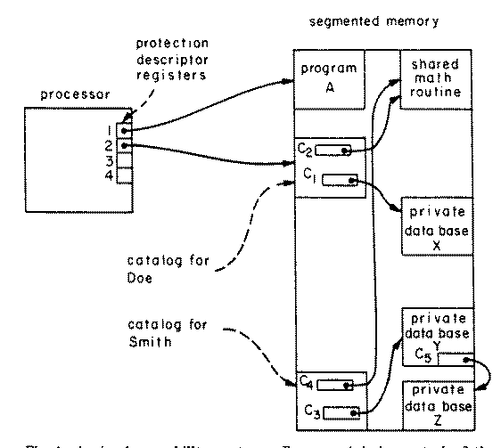

Fig. 6. A simple capability system. Program A is in control of the processor. Note that there is no way for the processor to address Smith's catalog or data base Y. On the other hand, data base X could be accessed by loading capability C1 into a protection descriptor register. Capability C1 is loadable because it is stored in a segment that can be reached from a capability already loaded in protection descriptor register 2. Note also that the former function of the privileged state bit has been accomplished by protecting the capabilities. The privileged state bit also has other uses and will be reintroduced later.